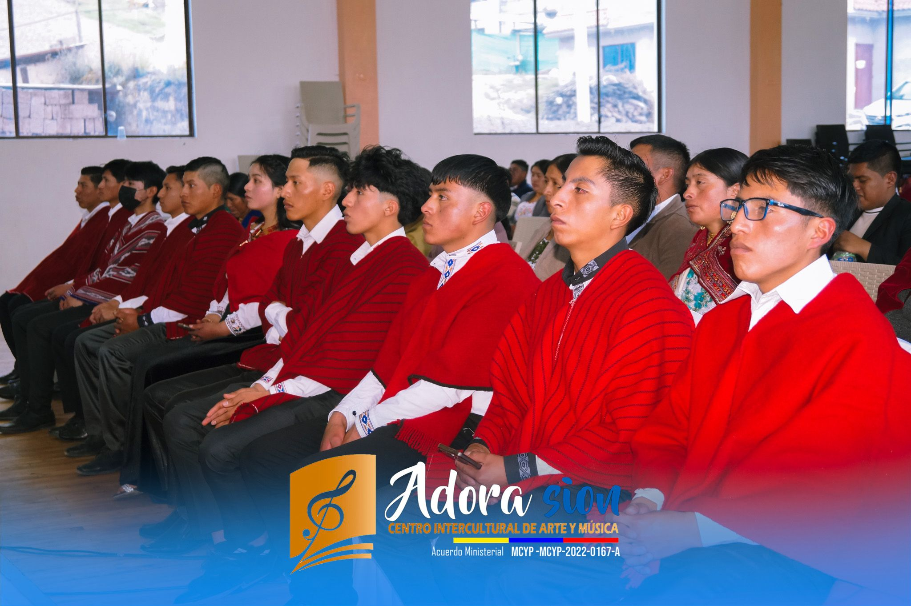

NUESTRA ESENCIA


Formar músicos y ministros de alabanza con excelencia técnica, fundamentos espirituales sólidos y un corazón sensible a la adoración, equipándolos para impactar positivamente en sus iglesias y comunidades en Puyo, Cajabamba y Guaranda.
Ser la academia de referencia en la formación musical y ministerial en la región central del Ecuador, reconocida por la calidad humana y artística de sus egresados y por ser un semillero de talentos con propósito.
C.I.A.M. Adora-Sión nació en 2015 del sueño de crear un espacio donde la excelencia musical y la fe pudieran converger. Hoy, hemos crecido y tenemos el privilegio de servir en tres sedes.